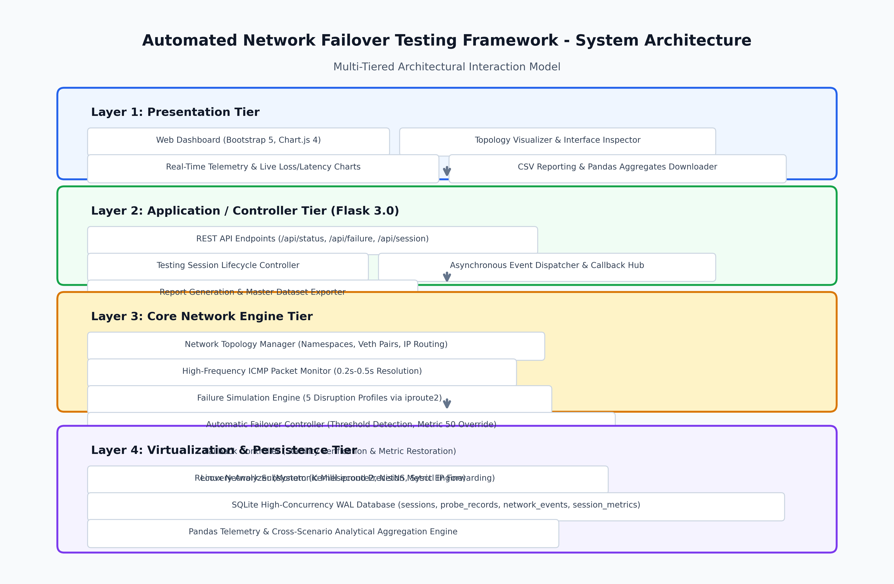
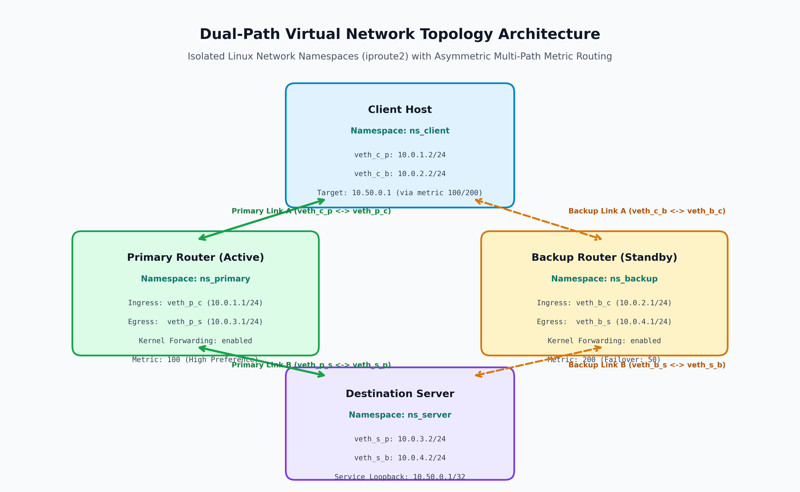
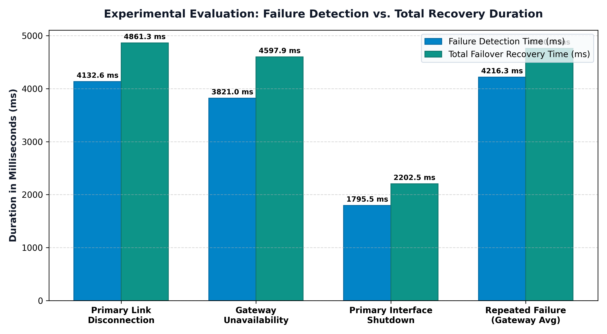
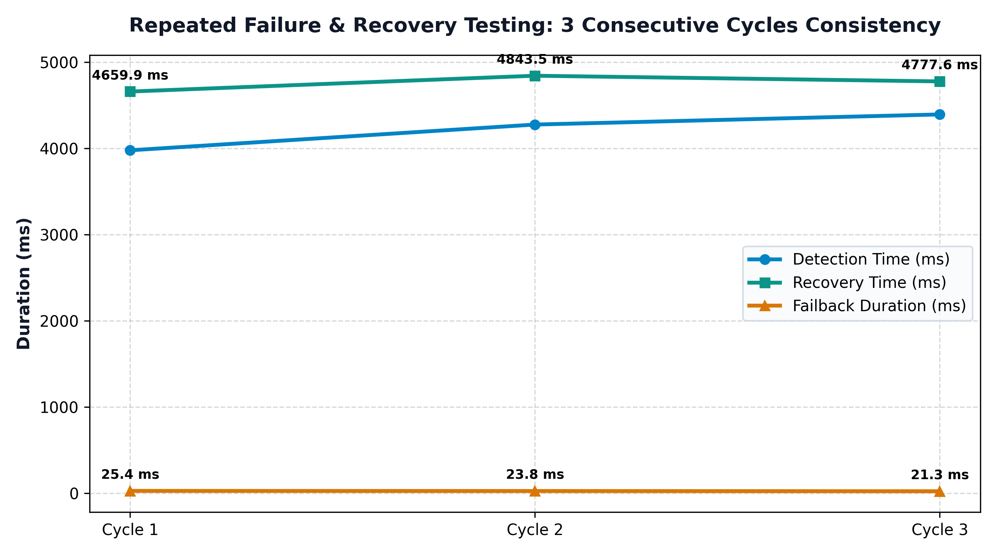

Empirical Evaluation, Autonomous Route Reconfiguration, and Sub-Millisecond Telemetry in Linux Namespaces.
ip netns) and Virtual Ethernet pairs (veth).
time.monotonic()). Commit telemetry to an SQLite WAL database and serve an interactive Flask dashboard.


ns_client, ns_primary, ns_backup, and ns_server.netns)veth)threading.Lock)veth_p_c. Simulates cable severing; validates threshold detection and route promotion.
ip_forward=0). Link remains UP while traffic is silently dropped.
veth_p_s). Simulates upstream provider disconnect.


Automated Network Failover and Recovery Testing Framework
The floor is now open for evaluation committee questions, observations, and technical discussions.